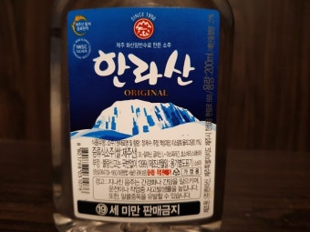
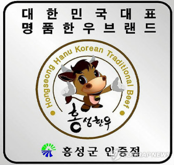

식음료 브랜드 160
스타벅스부터 코카-콜라까지, 일상을 채우는 음료·식품 브랜드의 역사와 전략을 연결합니다. 브랜드 아틀라스에 수록된 식음료 브랜드 160개를 로고와 함께 모았습니다. 각 항목은 설립 배경, 브랜드 아이덴티티, 로고 변천, 제품과 서비스, 현재 상태를 정리한 상세 페이지로 이어집니다.
다른 산업 보기
기원 국가가 확인된 브랜드는 75개이며 한국 50개, 미국 11개, 벨기에 2개, 프랑스 2개, 네덜란드 2개 순으로 많습니다. 설립연도가 확인된 브랜드는 88개이며 가장 오래된 곳은 1826년, 가장 최근은 2023년에 시작했습니다. 시기별로는 1900년 이전 10개, 1900~1949년 16개, 1950~1999년 40개, 2000년 이후 22개입니다. 수록 자료로는 로고 이미지 138개, 로고 변천 자료 26개, 연혁 타임라인 105개를 갖췄습니다. 이 가운데 63개는 공식 웹사이트가 일치하는 위키데이터 개체로 연결해 두었습니다.
식음료 브랜드 목록
품질 점수 순 상위는 로고 타일로, 나머지는 가나다순 목록으로 보입니다.
네슬레(Nestlé)는 스위스 브베에 본사를 둔 세계 최대 규모의 식음료 다국적 기업이다.
 말보로Marlboro미국 · 1924년
말보로Marlboro미국 · 1924년말보로(Marlboro)는 필립 모리스가 1924년 도입한 미국의 담배 브랜드이다.
 버드와이저Budweiser미국 · 1876년
버드와이저Budweiser미국 · 1876년버드와이저(Budweiser)는 아돌푸스 부시가 1876년 출시한 미국의 아메리칸 라거 맥주 브랜드이다.
맥도날드는 가장 평범한 소비재를 세계 어디서나 읽히는 대중문화의 기호로 바꾼 브랜드다.
 하이네켄Heineken네덜란드 · 1864년
하이네켄Heineken네덜란드 · 1864년하이네켄(Heineken)은 1864년 네덜란드 암스테르담에서 창립된 하이네켄 N.V.의 플래그십 페일 라거 맥주 브랜드이다.
 코카-콜라Coca-Cola
코카-콜라Coca-Cola코카-콜라는 음료의 맛보다 함께 마시는 순간의 감정을 브랜드 자산으로 축적해 왔다.
 써브웨이Subway미국 · 1965년
써브웨이Subway미국 · 1965년써브웨이(Subway)는 1965년 미국에서 시작된 서브마린 샌드위치 프랜차이즈이다.
 스타벅스Starbucks
스타벅스Starbucks스타벅스는 커피를 팔면서 동시에 사람들이 머무는 시간과 공간의 감각을 설계한다.
 도미노피자Domino's Pizza미국 · 1960년
도미노피자Domino's Pizza미국 · 1960년도미노피자(Domino's Pizza)는 1960년 미국에서 시작된 글로벌 피자 배달·테이크아웃 프랜차이즈이다.
 앱솔루트ABSOLUT
앱솔루트ABSOLUT앱솔루트는 보드카 병 하나를 광고와 예술의 반복 가능한 캔버스로 만든 브랜드다.
돔 페리뇽(Dom Pérignon)은 프랑스 모엣 샹동이 생산하는 빈티지 프레스티지 퀴베 샴페인 브랜드이다.
 켈로그KELLOGG’s미국 · 1906년
켈로그KELLOGG’s미국 · 1906년켈로그(Kellogg's)는 윌 키스 켈로그가 1906년 설립한 미국의 아침식사 시리얼 브랜드이다.
펩시(Pepsi)는 1893년 미국 노스캐롤라이나주 뉴번의 약사 케일럽 브래덤이 만든 탄산음료에서 출발해 1898년 '펩시콜라'로 개명된 음료…
 하인즈Heinz미국 · 1869년
하인즈Heinz미국 · 1869년하인즈(Heinz)는 1869년 헨리 J.
 엔제리너스Angel-in-us
엔제리너스Angel-in-us엔제리너스(Angel-in-us)는 롯데GRS가 운영하는 한국의 커피전문점 프랜차이즈다.
레드불(Red Bull)은 1987년 오스트리아에서 출시된 세계 최대 에너지음료 브랜드이다.
 모엣&샹동Moet & Chandon프랑스
모엣&샹동Moet & Chandon프랑스모엣&샹동(Moët & Chandon)은 1743년 프랑스 에페르네에서 설립된 세계적인 샴페인 하우스이다.
 피자헛Pizza Hut미국 · 1958년
피자헛Pizza Hut미국 · 1958년피자헛(Pizza Hut)은 1958년 미국 캔자스에서 창립된 세계 최대 규모의 피자 프랜차이즈 브랜드이다.
네스카페(Nescafé)는 네슬레가 생산·판매하는 인스턴트 커피 브랜드이다.
 뚜레쥬르Tous les Jours한국 · 1997년
뚜레쥬르Tous les Jours한국 · 1997년뚜레쥬르(Tous les Jours)는 CJ푸드빌이 운영하는 대한민국의 베이커리 프랜차이즈다.
버거킹(Burger King)은 1953년 미국 플로리다주 잭슨빌에서 인스타-버거킹으로 출발해 1954년 마이애미에서 본격 운영을 시작한…
 투썸플레이스A Twosome Place한국 · 2002년
투썸플레이스A Twosome Place한국 · 2002년투썸플레이스(A Twosome Place)는 2002년 출범한 한국의 프리미엄 디저트 카페 브랜드로, 현재 칼라일그룹이 소유한다.
 남양유업Namyang Dairy한국 · 1964년
남양유업Namyang Dairy한국 · 1964년남양유업(Namyang Dairy Products)은 1964년 창립한 한국의 대표 유제품 기업이다.
 고디바GODIVA벨기에 · 1926년
고디바GODIVA벨기에 · 1926년고디바(Godiva)는 1926년 벨기에 브뤼셀에서 창립된 프리미엄 초콜릿 브랜드이다.
코로나 엑스트라(Corona Extra)는 멕시코 그루포 모델로가 양조하는 페일 라거 맥주이다.
 롯데리아Lotteria한국 · 1972년
롯데리아Lotteria한국 · 1972년롯데리아(Lotteria)는 롯데그룹 계열 롯데GRS가 운영하는 한국 1위 버거 프랜차이즈로, 1979년 한국에 진출했다.
 맘스터치Mom's Touch1997년
맘스터치Mom's Touch1997년맘스터치(Mom's Touch)는 싸이버거로 유명한 한국의 버거·치킨 프랜차이즈로, 1997년 시작됐다.
 동아오츠카Dong-A Otsuka한국 · 1979년
동아오츠카Dong-A Otsuka한국 · 1979년동아오츠카(Dong-A Otsuka)는 이온음료 '포카리스웨트'와 비타민음료 '오로나민C'를 생산하는 한국·일본 합작 음료 기업이다.
 빽다방Paik's Coffee한국 · 2006년
빽다방Paik's Coffee한국 · 2006년빽다방(Paik's Coffee)은 더본코리아가 운영하는 한국의 저가 커피 프랜차이즈다.
 웅진식품Woongjin Food한국 · 1976년
웅진식품Woongjin Food한국 · 1976년웅진식품(Woongjin Food)은 쌀음료 '아침햇살'과 보리차 음료 '하늘보리'로 알려진 한국의 비알코올 음료 제조 기업이다.
 샘표Sempio한국 · 1946년
샘표Sempio한국 · 1946년샘표(Sempio)는 1946년 설립된 대한민국에서 가장 오래된 간장·발효식품 브랜드다.
 이탈리Eataly미국 · 2004년
이탈리Eataly미국 · 2004년이탈리(Eataly)는 이탈리아 고품질 식재료의 판매·취식·학습을 한 지붕 아래 결합한 이탈리아식 식료품 마켓이다.
스프라이트(Sprite)는 코카콜라가 1961년 선보인 레몬·라임 향 무카페인 탄산음료로, 전 세계 190개국 이상에서 판매되는 코카콜라의…
 이노센트Innocent
이노센트Innocent이노센트(innocent)는 1999년 영국에서 출범한 스무디·주스 브랜드로, 스무디 외에 주스·헬스 샷·코코넛 워터 등으로 제품군을 넓혀왔다.
 보해양조Bohae한국 · 1950년
보해양조Bohae한국 · 1950년보해양조(Bohae)는 호남권을 기반으로 소주 '잎새주'와 매실주 '매취순'을 생산하는 한국의 주류 제조 기업이다.
 글렌피딕Glenfiddich1887년
글렌피딕Glenfiddich1887년글렌피딕(Glenfiddich)은 1887년 스코틀랜드 더프타운에서 탄생한 싱글몰트 스카치 위스키 브랜드이다.
 해태제과Haitai Confectionery한국 · 1945년
해태제과Haitai Confectionery한국 · 1945년해태제과(Haitai Confectionery & Foods)는 허니버터칩으로 유명한 한국의 제과 기업으로, 1945년 창업했다.
 컴포즈커피Compose Coffee한국 · 2014년
컴포즈커피Compose Coffee한국 · 2014년컴포즈커피(Compose Coffee)는 2014년 부산에서 시작된 한국의 저가 커피 프랜차이즈로, 2024년 필리핀 졸리비그룹이 지분을…
 리베나Ribena영국
리베나Ribena영국리베나는 블랙커런트(Ribes nigrum)를 원료로 한 영국의 대표적 과일 농축 음료 브랜드다.
 매직스푼Magic Spoon Treats2019년
매직스푼Magic Spoon Treats2019년매직스푼은 그렉 세위츠와 가비 루이스가 2019년 미국에서 선보인 저당·고단백 시리얼 브랜드다.
 바카디BACARDÍ1862년
바카디BACARDÍ1862년바카디(Bacardí)는 1862년 쿠바에서 설립된 세계적인 럼 브랜드이다.
 립톤Lipton
립톤Lipton립톤(Lipton)은 토머스 립톤이 창시한 영국 기원의 글로벌 차 브랜드이다.
 할리스Hollys1998년
할리스Hollys1998년할리스(Hollys)는 KG그룹 계열이 운영하는 한국의 커피전문점 프랜차이즈다.
 크라운제과Crown Confectionery한국 · 1947년
크라운제과Crown Confectionery한국 · 1947년크라운제과(Crown Confectionery)는 크라운해태홀딩스를 지주회사로 하는 대한민국의 종합 제과 기업이다.
 SPC삼립SPC Samlip한국 · 1945년
SPC삼립SPC Samlip한국 · 1945년SPC삼립(SPC Samlip)은 1945년 창업한 상미당을 모태로 하는 SPC그룹 계열의 종합 제빵·식품 기업이다.
 롯데웰푸드Lotte Wellfood한국 · 1967년
롯데웰푸드Lotte Wellfood한국 · 1967년롯데웰푸드(Lotte Wellfood)는 빼빼로·가나 초콜릿으로 유명한 롯데그룹 계열 제과 기업으로, 1967년 롯데제과로 설립돼 2023년…
 농심Nongshim한국 · 1965년
농심Nongshim한국 · 1965년농심(Nongshim)은 신라면으로 유명한 한국의 대표 라면·스낵 기업으로, 1965년 설립돼 1978년 농심으로 사명을 바꿨다.
 무더 바벨뤼터Moeder Babelutte벨기에 · 1850년
무더 바벨뤼터Moeder Babelutte벨기에 · 1850년무더 바벨뤼터(Moeder Babelutte)는 전통 바벨뤼터(꿀맛 토피)와 초콜릿·프랄린을 파는 벨기에 가족경영 제과 체인이다.
전체 목록

한라산소주 Hallasan Soju제주 지역시장을 오래 지켜온 지역 소주 브랜드
홍성한우 Hongseong Hanwoo충남 홍성 축산농가의 공동 한우 브랜드